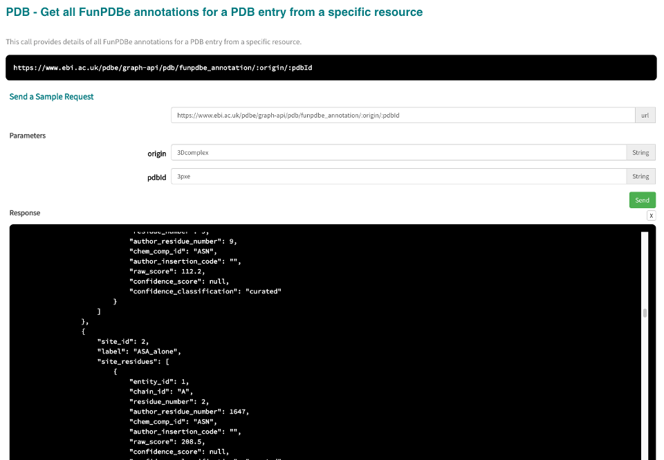

Accessible residues for a PDB structure¶
If you have a structure and want to know the residues which are accessible, use the annotations API call for a PDB entry for a particular resource. This data is provided by 3Dcomplex. So use the origin in query parameter as 3Dcomplex. Then filter the residues on label ASA_alone and raw score > 0.

1) Get the 3Dcomplex annotations for PDB entry 3pxe¶
[49]:
import requests
pdb_id = "3pxe"
request_url = f"https://wwwint.ebi.ac.uk/pdbe/graph-api/pdb/funpdbe_annotation/3Dcomplex/{pdb_id}"
annotations_data = requests.get(request_url).json()
2) Filter the data for ASA_alone label¶
[50]:
filtered_annotations_data = list(filter(lambda x: x["label"] == "ASA_alone", annotations_data[pdb_id][0]["annotations"]))
3) Filter site_residues on raw_score > 0¶
[51]:
for site in filtered_annotations_data:
filtered_site_residues = list(filter(lambda x: x["raw_score"] > 0, site["site_residues"]))
for residue in filtered_site_residues:
print("Residue {} (author residue {}) in chain {} of entity {} annotated as accessible residue".format(residue.get("residue_number"), residue.get("author_residue_number"), residue.get("chain_id"), residue.get("entity_id")))
Residue 2 (author residue 1647) in chain A of entity 1 annotated as accessible residue
Residue 3 (author residue 1648) in chain A of entity 1 annotated as accessible residue
Residue 4 (author residue 1649) in chain A of entity 1 annotated as accessible residue
Residue 5 (author residue 1650) in chain A of entity 1 annotated as accessible residue
Residue 6 (author residue 1651) in chain A of entity 1 annotated as accessible residue
Residue 9 (author residue 1654) in chain A of entity 1 annotated as accessible residue
Residue 10 (author residue 1655) in chain A of entity 1 annotated as accessible residue
Residue 11 (author residue 1656) in chain A of entity 1 annotated as accessible residue
Residue 12 (author residue 1657) in chain A of entity 1 annotated as accessible residue
Residue 13 (author residue 1658) in chain A of entity 1 annotated as accessible residue
Residue 14 (author residue 1659) in chain A of entity 1 annotated as accessible residue
Residue 15 (author residue 1660) in chain A of entity 1 annotated as accessible residue
Residue 16 (author residue 1661) in chain A of entity 1 annotated as accessible residue
Residue 17 (author residue 1662) in chain A of entity 1 annotated as accessible residue
Residue 18 (author residue 1663) in chain A of entity 1 annotated as accessible residue
Residue 19 (author residue 1664) in chain A of entity 1 annotated as accessible residue
Residue 21 (author residue 1666) in chain A of entity 1 annotated as accessible residue
Residue 22 (author residue 1667) in chain A of entity 1 annotated as accessible residue
Residue 23 (author residue 1668) in chain A of entity 1 annotated as accessible residue
Residue 24 (author residue 1669) in chain A of entity 1 annotated as accessible residue
Residue 25 (author residue 1670) in chain A of entity 1 annotated as accessible residue
Residue 26 (author residue 1671) in chain A of entity 1 annotated as accessible residue
Residue 27 (author residue 1672) in chain A of entity 1 annotated as accessible residue
Residue 28 (author residue 1673) in chain A of entity 1 annotated as accessible residue
Residue 29 (author residue 1674) in chain A of entity 1 annotated as accessible residue
Residue 30 (author residue 1675) in chain A of entity 1 annotated as accessible residue
Residue 31 (author residue 1676) in chain A of entity 1 annotated as accessible residue
Residue 32 (author residue 1677) in chain A of entity 1 annotated as accessible residue
Residue 33 (author residue 1678) in chain A of entity 1 annotated as accessible residue
Residue 34 (author residue 1679) in chain A of entity 1 annotated as accessible residue
Residue 35 (author residue 1680) in chain A of entity 1 annotated as accessible residue
Residue 36 (author residue 1681) in chain A of entity 1 annotated as accessible residue
Residue 37 (author residue 1682) in chain A of entity 1 annotated as accessible residue
Residue 38 (author residue 1683) in chain A of entity 1 annotated as accessible residue
Residue 39 (author residue 1684) in chain A of entity 1 annotated as accessible residue
Residue 40 (author residue 1685) in chain A of entity 1 annotated as accessible residue
Residue 41 (author residue 1686) in chain A of entity 1 annotated as accessible residue
Residue 44 (author residue 1689) in chain A of entity 1 annotated as accessible residue
Residue 45 (author residue 1690) in chain A of entity 1 annotated as accessible residue
Residue 46 (author residue 1691) in chain A of entity 1 annotated as accessible residue
Residue 47 (author residue 1692) in chain A of entity 1 annotated as accessible residue
Residue 48 (author residue 1693) in chain A of entity 1 annotated as accessible residue
Residue 49 (author residue 1694) in chain A of entity 1 annotated as accessible residue
Residue 50 (author residue 1695) in chain A of entity 1 annotated as accessible residue
Residue 51 (author residue 1696) in chain A of entity 1 annotated as accessible residue
Residue 52 (author residue 1697) in chain A of entity 1 annotated as accessible residue
Residue 53 (author residue 1698) in chain A of entity 1 annotated as accessible residue
Residue 54 (author residue 1699) in chain A of entity 1 annotated as accessible residue
Residue 55 (author residue 1700) in chain A of entity 1 annotated as accessible residue
Residue 56 (author residue 1701) in chain A of entity 1 annotated as accessible residue
Residue 57 (author residue 1702) in chain A of entity 1 annotated as accessible residue
Residue 59 (author residue 1704) in chain A of entity 1 annotated as accessible residue
Residue 60 (author residue 1705) in chain A of entity 1 annotated as accessible residue
Residue 62 (author residue 1707) in chain A of entity 1 annotated as accessible residue
Residue 64 (author residue 1709) in chain A of entity 1 annotated as accessible residue
Residue 65 (author residue 1710) in chain A of entity 1 annotated as accessible residue
Residue 66 (author residue 1711) in chain A of entity 1 annotated as accessible residue
Residue 67 (author residue 1712) in chain A of entity 1 annotated as accessible residue
Residue 71 (author residue 1716) in chain A of entity 1 annotated as accessible residue
Residue 72 (author residue 1717) in chain A of entity 1 annotated as accessible residue
Residue 73 (author residue 1718) in chain A of entity 1 annotated as accessible residue
Residue 75 (author residue 1720) in chain A of entity 1 annotated as accessible residue
Residue 76 (author residue 1721) in chain A of entity 1 annotated as accessible residue
Residue 77 (author residue 1722) in chain A of entity 1 annotated as accessible residue
Residue 78 (author residue 1723) in chain A of entity 1 annotated as accessible residue
Residue 79 (author residue 1724) in chain A of entity 1 annotated as accessible residue
Residue 80 (author residue 1725) in chain A of entity 1 annotated as accessible residue
Residue 81 (author residue 1726) in chain A of entity 1 annotated as accessible residue
Residue 82 (author residue 1727) in chain A of entity 1 annotated as accessible residue
Residue 83 (author residue 1728) in chain A of entity 1 annotated as accessible residue
Residue 84 (author residue 1729) in chain A of entity 1 annotated as accessible residue
Residue 85 (author residue 1730) in chain A of entity 1 annotated as accessible residue
Residue 86 (author residue 1731) in chain A of entity 1 annotated as accessible residue
Residue 87 (author residue 1732) in chain A of entity 1 annotated as accessible residue
Residue 88 (author residue 1733) in chain A of entity 1 annotated as accessible residue
Residue 89 (author residue 1734) in chain A of entity 1 annotated as accessible residue
Residue 90 (author residue 1735) in chain A of entity 1 annotated as accessible residue
Residue 91 (author residue 1736) in chain A of entity 1 annotated as accessible residue
Residue 92 (author residue 1737) in chain A of entity 1 annotated as accessible residue
Residue 94 (author residue 1739) in chain A of entity 1 annotated as accessible residue
Residue 95 (author residue 1740) in chain A of entity 1 annotated as accessible residue
Residue 96 (author residue 1741) in chain A of entity 1 annotated as accessible residue
Residue 97 (author residue 1742) in chain A of entity 1 annotated as accessible residue
Residue 98 (author residue 1743) in chain A of entity 1 annotated as accessible residue
Residue 99 (author residue 1744) in chain A of entity 1 annotated as accessible residue
Residue 100 (author residue 1745) in chain A of entity 1 annotated as accessible residue
Residue 101 (author residue 1746) in chain A of entity 1 annotated as accessible residue
Residue 102 (author residue 1747) in chain A of entity 1 annotated as accessible residue
Residue 104 (author residue 1749) in chain A of entity 1 annotated as accessible residue
Residue 105 (author residue 1750) in chain A of entity 1 annotated as accessible residue
Residue 106 (author residue 1751) in chain A of entity 1 annotated as accessible residue
Residue 107 (author residue 1752) in chain A of entity 1 annotated as accessible residue
Residue 108 (author residue 1753) in chain A of entity 1 annotated as accessible residue
Residue 109 (author residue 1754) in chain A of entity 1 annotated as accessible residue
Residue 110 (author residue 1755) in chain A of entity 1 annotated as accessible residue
Residue 111 (author residue 1756) in chain A of entity 1 annotated as accessible residue
Residue 112 (author residue 1757) in chain A of entity 1 annotated as accessible residue
Residue 113 (author residue 1758) in chain A of entity 1 annotated as accessible residue
Residue 114 (author residue 1759) in chain A of entity 1 annotated as accessible residue
Residue 115 (author residue 1760) in chain A of entity 1 annotated as accessible residue
Residue 117 (author residue 1762) in chain A of entity 1 annotated as accessible residue
Residue 118 (author residue 1763) in chain A of entity 1 annotated as accessible residue
Residue 119 (author residue 1764) in chain A of entity 1 annotated as accessible residue
Residue 120 (author residue 1765) in chain A of entity 1 annotated as accessible residue
Residue 121 (author residue 1766) in chain A of entity 1 annotated as accessible residue
Residue 122 (author residue 1767) in chain A of entity 1 annotated as accessible residue
Residue 123 (author residue 1768) in chain A of entity 1 annotated as accessible residue
Residue 124 (author residue 1769) in chain A of entity 1 annotated as accessible residue
Residue 125 (author residue 1770) in chain A of entity 1 annotated as accessible residue
Residue 126 (author residue 1771) in chain A of entity 1 annotated as accessible residue
Residue 127 (author residue 1772) in chain A of entity 1 annotated as accessible residue
Residue 128 (author residue 1773) in chain A of entity 1 annotated as accessible residue
Residue 129 (author residue 1774) in chain A of entity 1 annotated as accessible residue
Residue 130 (author residue 1775) in chain A of entity 1 annotated as accessible residue
Residue 131 (author residue 1776) in chain A of entity 1 annotated as accessible residue
Residue 132 (author residue 1777) in chain A of entity 1 annotated as accessible residue
Residue 133 (author residue 1778) in chain A of entity 1 annotated as accessible residue
Residue 134 (author residue 1779) in chain A of entity 1 annotated as accessible residue
Residue 135 (author residue 1780) in chain A of entity 1 annotated as accessible residue
Residue 136 (author residue 1781) in chain A of entity 1 annotated as accessible residue
Residue 137 (author residue 1782) in chain A of entity 1 annotated as accessible residue
Residue 139 (author residue 1784) in chain A of entity 1 annotated as accessible residue
Residue 140 (author residue 1785) in chain A of entity 1 annotated as accessible residue
Residue 141 (author residue 1786) in chain A of entity 1 annotated as accessible residue
Residue 143 (author residue 1788) in chain A of entity 1 annotated as accessible residue
Residue 144 (author residue 1789) in chain A of entity 1 annotated as accessible residue
Residue 145 (author residue 1790) in chain A of entity 1 annotated as accessible residue
Residue 146 (author residue 1791) in chain A of entity 1 annotated as accessible residue
Residue 147 (author residue 1792) in chain A of entity 1 annotated as accessible residue
Residue 148 (author residue 1793) in chain A of entity 1 annotated as accessible residue
Residue 149 (author residue 1794) in chain A of entity 1 annotated as accessible residue
Residue 150 (author residue 1795) in chain A of entity 1 annotated as accessible residue
Residue 151 (author residue 1796) in chain A of entity 1 annotated as accessible residue
Residue 152 (author residue 1797) in chain A of entity 1 annotated as accessible residue
Residue 153 (author residue 1798) in chain A of entity 1 annotated as accessible residue
Residue 154 (author residue 1799) in chain A of entity 1 annotated as accessible residue
Residue 155 (author residue 1800) in chain A of entity 1 annotated as accessible residue
Residue 156 (author residue 1801) in chain A of entity 1 annotated as accessible residue
Residue 159 (author residue 1804) in chain A of entity 1 annotated as accessible residue
Residue 160 (author residue 1805) in chain A of entity 1 annotated as accessible residue
Residue 161 (author residue 1806) in chain A of entity 1 annotated as accessible residue
Residue 162 (author residue 1807) in chain A of entity 1 annotated as accessible residue
Residue 166 (author residue 1811) in chain A of entity 1 annotated as accessible residue
Residue 167 (author residue 1812) in chain A of entity 1 annotated as accessible residue
Residue 168 (author residue 1813) in chain A of entity 1 annotated as accessible residue
Residue 169 (author residue 1814) in chain A of entity 1 annotated as accessible residue
Residue 170 (author residue 1815) in chain A of entity 1 annotated as accessible residue
Residue 171 (author residue 1816) in chain A of entity 1 annotated as accessible residue
Residue 172 (author residue 1817) in chain A of entity 1 annotated as accessible residue
Residue 173 (author residue 1818) in chain A of entity 1 annotated as accessible residue
Residue 174 (author residue 1819) in chain A of entity 1 annotated as accessible residue
Residue 175 (author residue 1820) in chain A of entity 1 annotated as accessible residue
Residue 176 (author residue 1821) in chain A of entity 1 annotated as accessible residue
Residue 177 (author residue 1822) in chain A of entity 1 annotated as accessible residue
Residue 178 (author residue 1823) in chain A of entity 1 annotated as accessible residue
Residue 179 (author residue 1824) in chain A of entity 1 annotated as accessible residue
Residue 180 (author residue 1825) in chain A of entity 1 annotated as accessible residue
Residue 181 (author residue 1826) in chain A of entity 1 annotated as accessible residue
Residue 182 (author residue 1827) in chain A of entity 1 annotated as accessible residue
Residue 183 (author residue 1828) in chain A of entity 1 annotated as accessible residue
Residue 184 (author residue 1829) in chain A of entity 1 annotated as accessible residue
Residue 185 (author residue 1830) in chain A of entity 1 annotated as accessible residue
Residue 186 (author residue 1831) in chain A of entity 1 annotated as accessible residue
Residue 187 (author residue 1832) in chain A of entity 1 annotated as accessible residue
Residue 189 (author residue 1834) in chain A of entity 1 annotated as accessible residue
Residue 190 (author residue 1835) in chain A of entity 1 annotated as accessible residue
Residue 191 (author residue 1836) in chain A of entity 1 annotated as accessible residue
Residue 192 (author residue 1837) in chain A of entity 1 annotated as accessible residue
Residue 194 (author residue 1839) in chain A of entity 1 annotated as accessible residue
Residue 195 (author residue 1840) in chain A of entity 1 annotated as accessible residue
Residue 199 (author residue 1844) in chain A of entity 1 annotated as accessible residue
Residue 200 (author residue 1845) in chain A of entity 1 annotated as accessible residue
Residue 201 (author residue 1846) in chain A of entity 1 annotated as accessible residue
Residue 202 (author residue 1847) in chain A of entity 1 annotated as accessible residue
Residue 203 (author residue 1848) in chain A of entity 1 annotated as accessible residue
Residue 204 (author residue 1849) in chain A of entity 1 annotated as accessible residue
Residue 205 (author residue 1850) in chain A of entity 1 annotated as accessible residue
Residue 206 (author residue 1851) in chain A of entity 1 annotated as accessible residue
Residue 207 (author residue 1852) in chain A of entity 1 annotated as accessible residue
Residue 208 (author residue 1853) in chain A of entity 1 annotated as accessible residue
Residue 209 (author residue 1854) in chain A of entity 1 annotated as accessible residue
Residue 210 (author residue 1855) in chain A of entity 1 annotated as accessible residue
Residue 211 (author residue 1856) in chain A of entity 1 annotated as accessible residue
Residue 212 (author residue 1857) in chain A of entity 1 annotated as accessible residue
Residue 213 (author residue 1858) in chain A of entity 1 annotated as accessible residue
Residue 214 (author residue 1859) in chain A of entity 1 annotated as accessible residue
Residue 3 (author residue 3) in chain E of entity 2 annotated as accessible residue
Residue 4 (author residue 4) in chain E of entity 2 annotated as accessible residue
Residue 6 (author residue 6) in chain E of entity 2 annotated as accessible residue
Residue 7 (author residue 7) in chain E of entity 2 annotated as accessible residue
Residue 8 (author residue 8) in chain E of entity 2 annotated as accessible residue
Residue 9 (author residue 9) in chain E of entity 2 annotated as accessible residue
[ ]: